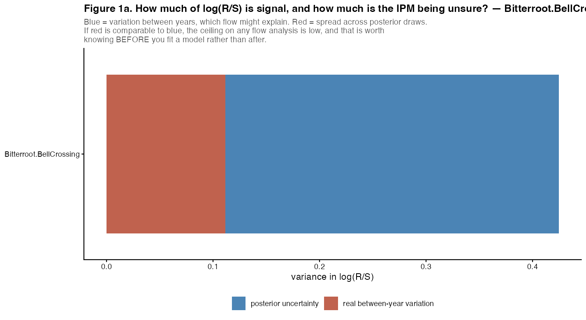
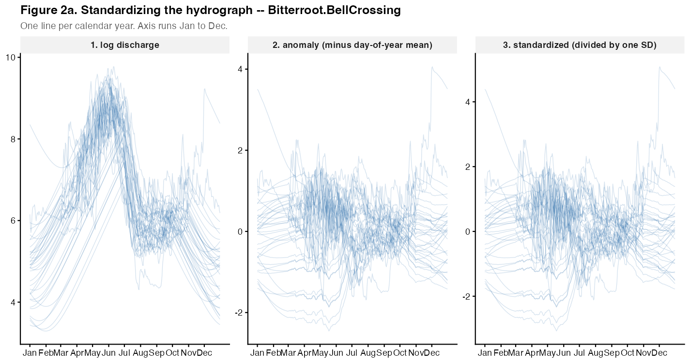
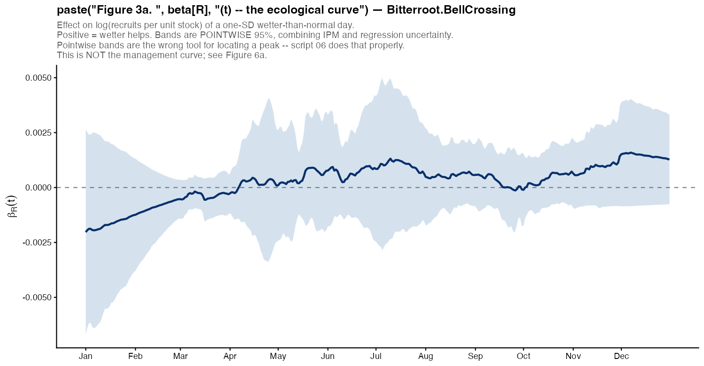
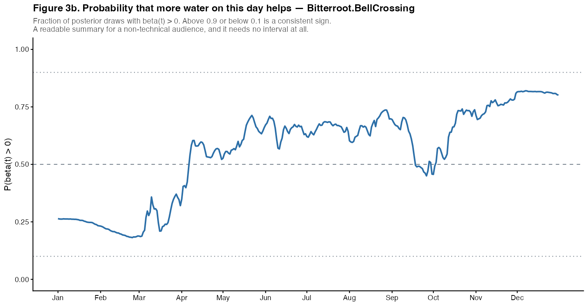
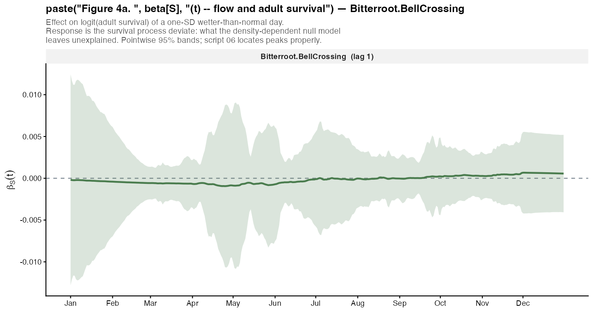
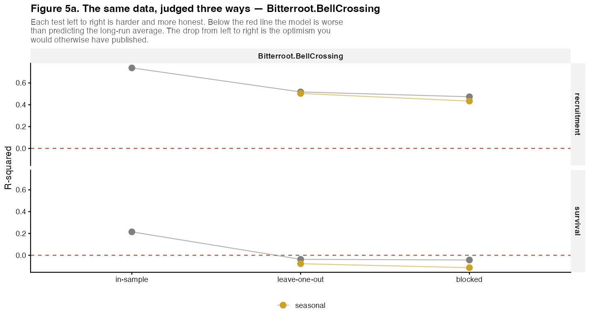
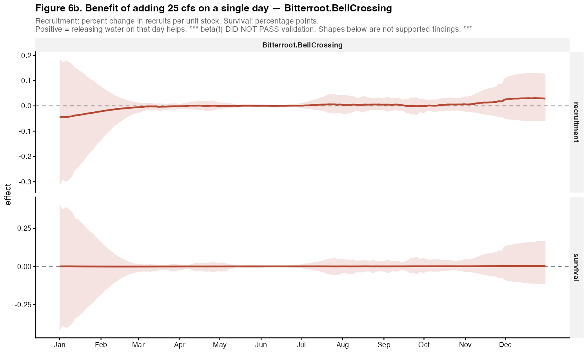
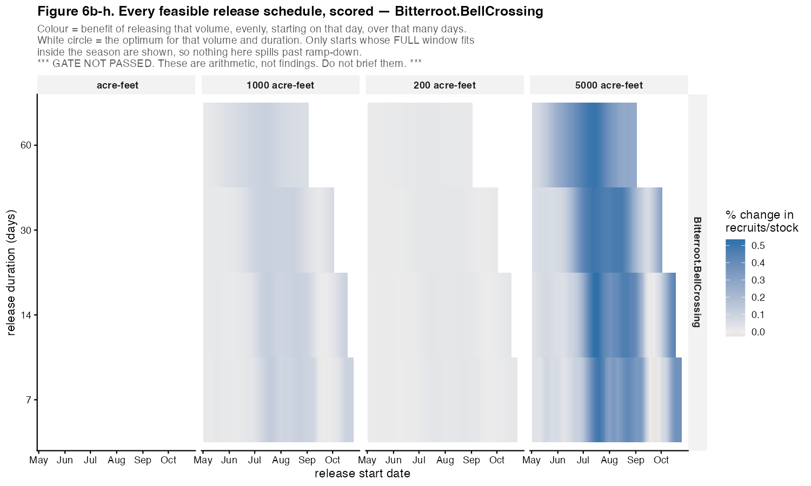

26 site(s); BoR scenarios for 8
NO GATE ROW. Validation has not been run for this site, so nothing below has a warrant. Run
R/05_validate.R.
NOT AVAILABLE - site Bitterroot.BellCrossing is not in response.rds. Run
R/01_build_response.Rto produce it.


Flow is standardized in three steps, in this order: logs, because discharge is multiplicative; minus each day’s mean across years, so a positive value means wetter than that date usually is; then divided by one global standard deviation. Dividing each day by its own SD would make a small wobble in a stable week count the same as a doubling in June.
beta(t) is a weight for every day of the year. Score a hydrograph with it and the sum is the predicted change in the response.



NOT AVAILABLE - beta(t) has not been fitted for this site. Run
R/03_fit_beta_recruitment.Rto produce it.
NOT AVAILABLE - validation has not been run for this site. Run
R/05_validate.Rto produce it.
Three numbers, failing in different ways. r2_insample is
optimistic by construction - the model has seen these years and spent
edf degrees of freedom on them. r2_blocked
holds out contiguous blocks of years, so a test year’s neighbours are
not in the training set; it can be negative, which means worse than
predicting the long-run mean. The gap between r2_loo and
r2_blocked is the autocorrelation leak that leave-one-out
was flattering. p_value is a permutation test whose
smallest attainable value is finest_p; a p equal to that
floor means no permutation did as well, not that p is precisely
that.


beta(t) is per standard deviation of log anomaly; a manager releases cfs. Dividing by that day’s baseline discharge reshapes the curve, because discharge spans more than an order of magnitude across the year. The best day to release water is often not the day with the largest beta(t).
NOT AVAILABLE - no interval rows for this site. Run
R/06_daily_sensitivity.Rto produce it.
NOT AVAILABLE - no schedule rows for this site. Run
R/06b_decision_window.Rto produce it.

DATA NOT AVAILABLE - there is no BoR forecast hydrograph for this site. That is different from finding no effect: the question was not asked here.
NOT AVAILABLE - the rule-curve arm has not been run for this site. Run
R/10_rulecurve.Rto produce it.
| figure | file |
|---|---|
| 01_f1a | 01_f1a__Bitterroot_BellCrossing.png |
| 02_f2a | 02_f2a_Bitterroot.BellCrossing.png |
| 03_f3a | 03_f3a__Bitterroot_BellCrossing.png |
| 03_f3b | 03_f3b__Bitterroot_BellCrossing.png |
| 04_f4a | 04_f4a__Bitterroot_BellCrossing.png |
| 05_f5a | 05_f5a__Bitterroot_BellCrossing.png |
| 06_f6a | 06_f6a__Bitterroot_BellCrossing.png |
| 06_f6b | 06_f6b__Bitterroot_BellCrossing.png |
| 06b_f | 06b_f__Bitterroot_BellCrossing.png |
| 06b_h | 06b_h__Bitterroot_BellCrossing.png |
| 07_f7a | 07_f7a__Bitterroot_BellCrossing.png |
| 08_f8a | 08_f8a.png |
| 08_f8b | 08_f8b.png |
| 10_a | 10_a.png |